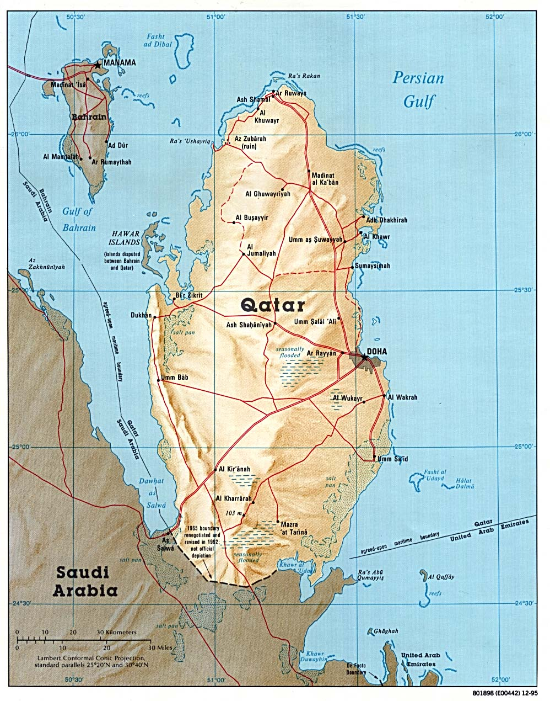

O Catar é um país árabe localizado na Ásia Ocidental.O país é um pouco menor do que a Jamaica.


| Atualmente, é considerado o país mais rico do mundo, tendo à frente da sua economia a exportação de petróleo. |
O país é considerado um emirado, tendo seu território administrado por um membro da classe dominante, no caso um emir.
| O Xeque Tamim bin Hamad bin Khalifa Al-Thani (em árabe: الشيخ تميم بن حمد آل ثاني; Doha, 3 de Junho de 1980) é o Emir do Catar. Quarto filho do monarca anterior, Hamad bin Khalifa Al-Thani, assumiu o trono catariano em 25 de Junho de 2013, depois da abdicação do pai, quando tinha apenas 33 anos de idade. |